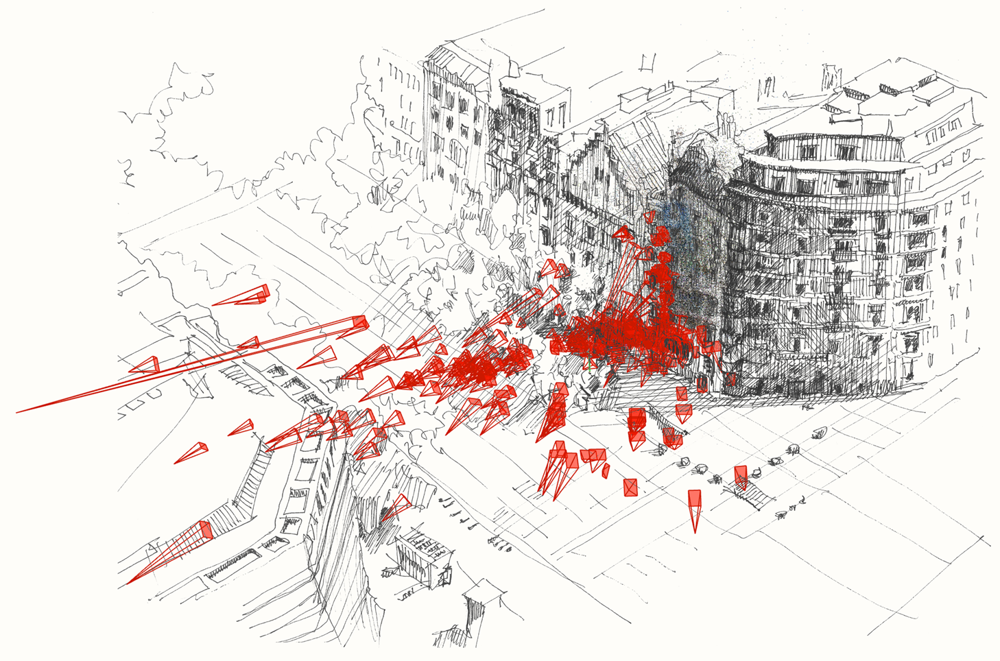
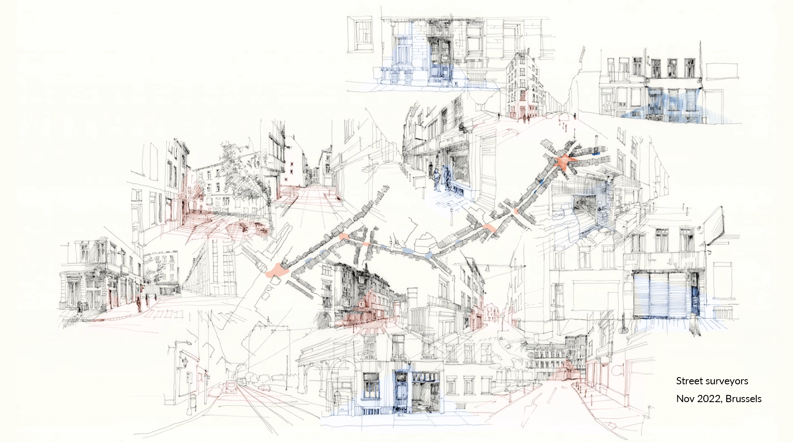
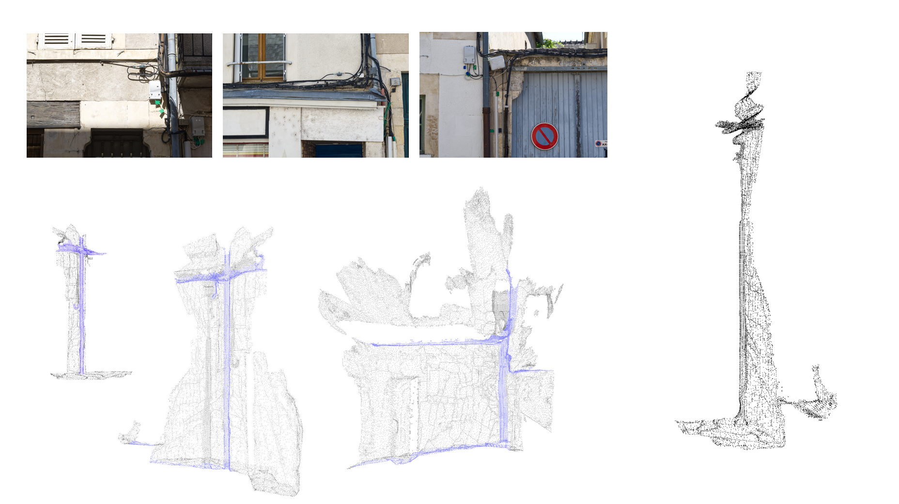
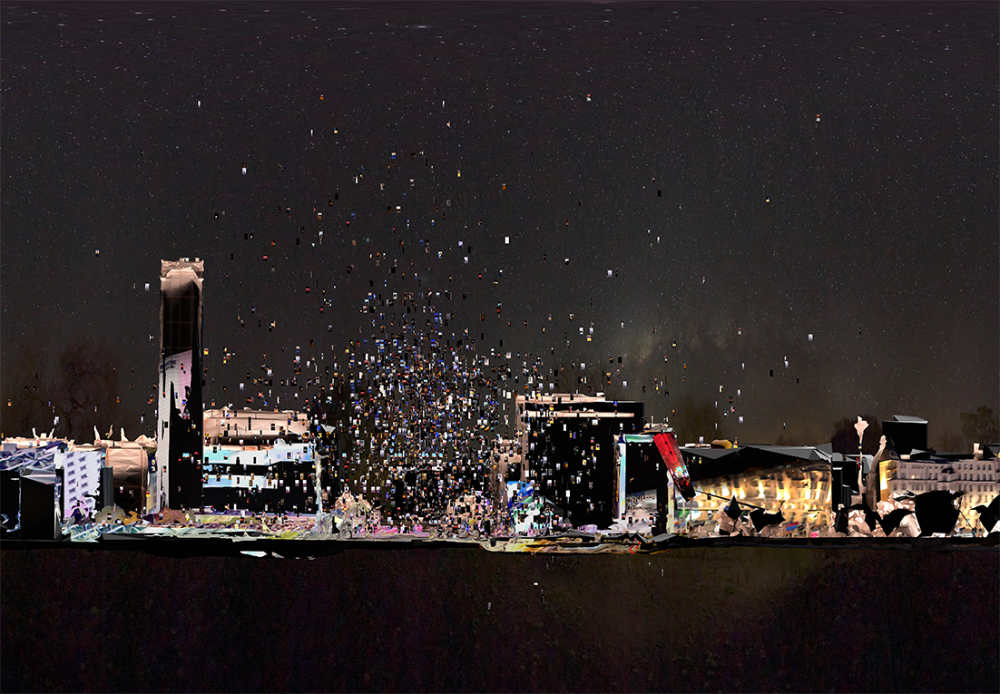
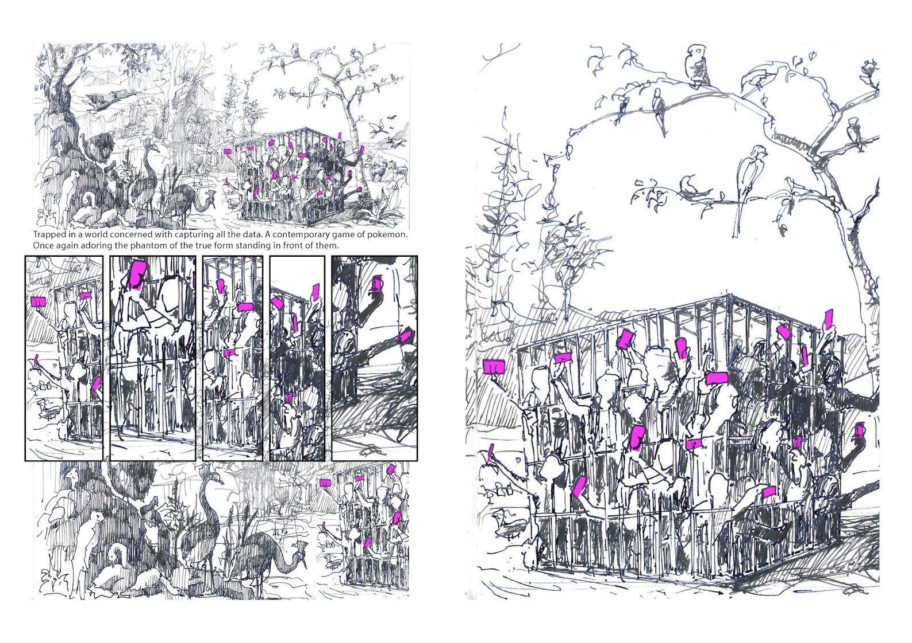

mapping collective experiences in New York
collaboration with Fieldstation Studio
mapping spatial interactions using social media content in Barcelona
mapping socio-spatial interactions with surveillance infrastructures in Brussels
mapping cable infrastructure in Nevers together with Supisara Burapachairsri and David Miller
The ongoing research project Citography explores the impact of technologies...
The project delves into speculative landscapes and emerging architecture...

Public life and technology together with Tanya Mangion and Isinsu Tazici
